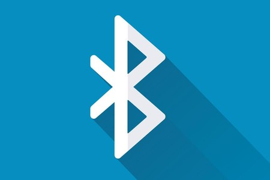

DESCRIPCIÓN
Bluetooth es una especificación industrial para redes inalámbricas de área personal (WPAN) creado por Bluetooth Special Interest Group, Inc. que posibilita la transmisión de voz y datos entre diferentes dispositivos mediante un enlace por radiofrecuencia en la banda ISM de los 2.4 GHz. Los principales objetivos que se pretenden conseguir con esta norma son:
Facilitar las comunicaciones entre equipos móviles.
Eliminar los cables y conectores entre estos.
Ofrecer la posibilidad de crear pequeñas redes inalámbricas y facilitar la sincronización de datos entre equipos personales.
